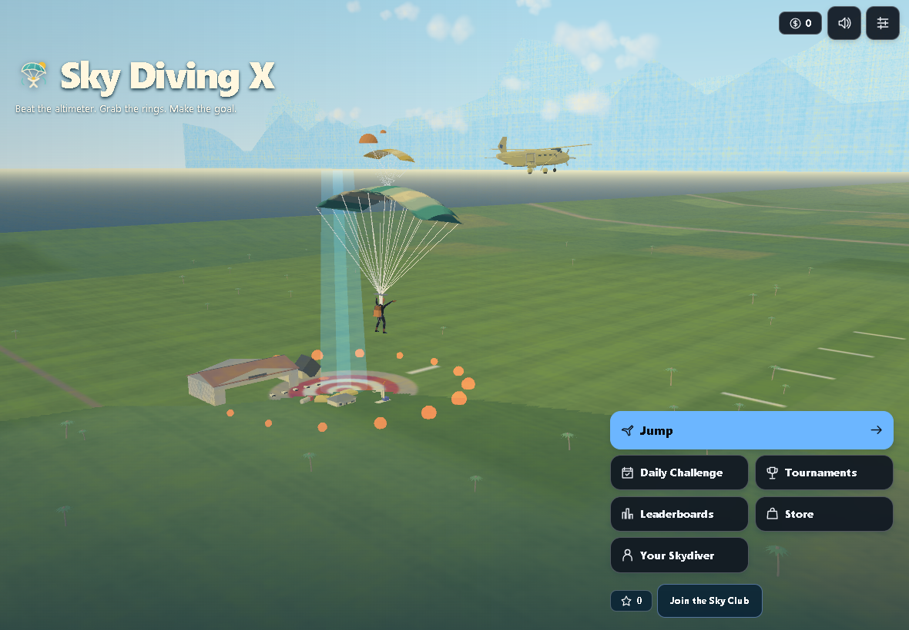
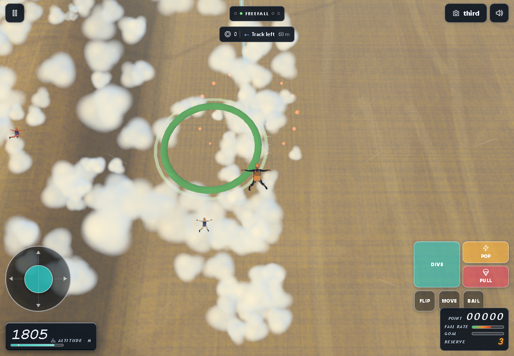
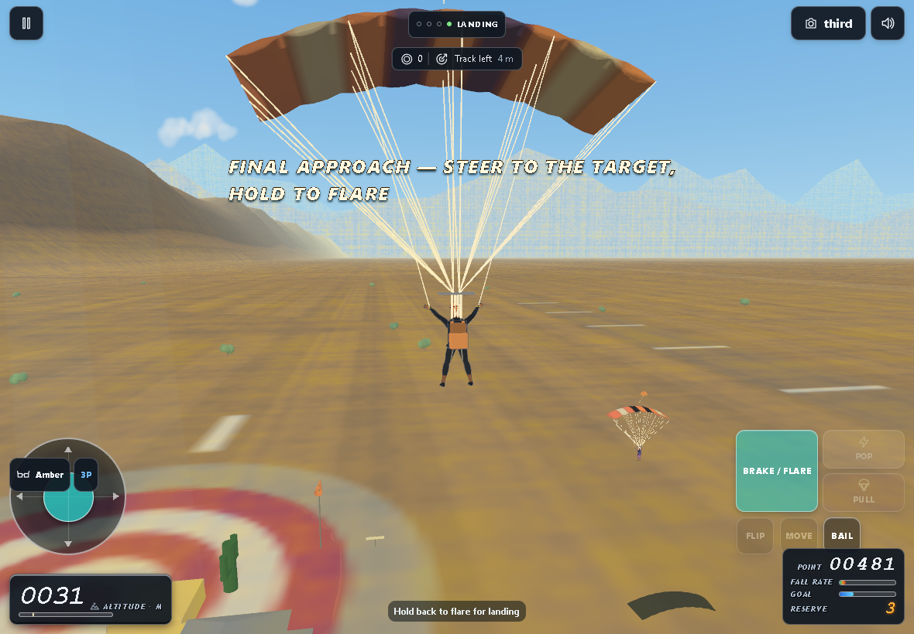
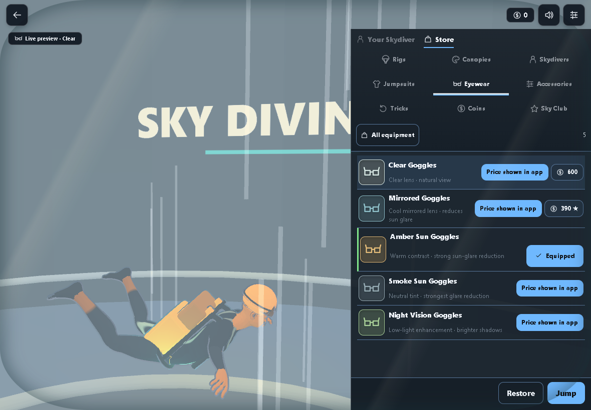
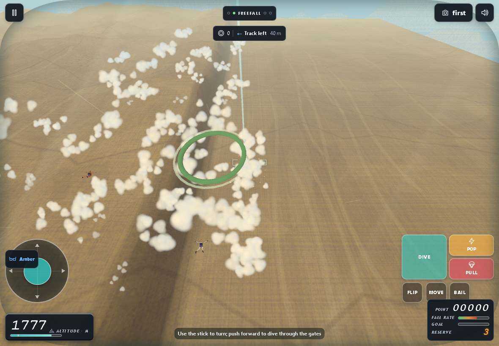
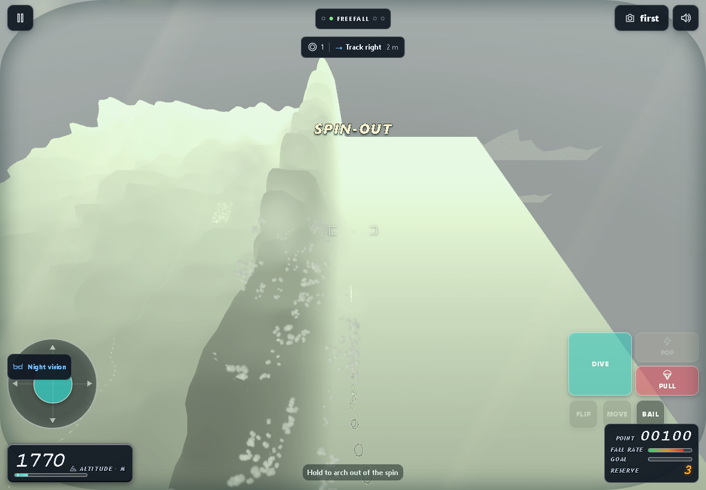

Next update preview
Feel the sky. Find your line.
A closer connection to every jump: compact game menus, clear first-person instruments, responsive wind and canopy sounds, and a more readable final approach.
These captures show the upcoming game update. The store download links offer the currently released version.

Icon controls and small game panels keep the sky in view.

Live direction and distance cues help you line up precision gates and maintain a chain.

Lateral target guidance, a steadier camera and a clear flare cue carry you into touchdown.

Preview amber, smoke, mirrored and low-light lenses in the equipment store.

Amber lenses reduce sun glare and increase contrast. Turn the lens effect on or off during a jump.

Night-vision goggles brighten shadows with a green low-light treatment. Third-person lens effects are optional.
Equipment that changes your view
Amber Sun, Smoke Sun and Night Vision goggles are individual, restorable in-app products, each configured at US $0.99. Your platform store shows the local price before you buy. Product availability follows the app update and store review.
The lens treatment appears in first person by default when the purchased glasses are equipped. You can disable it at any time, or enable it in third person. Core flight controls, landing guidance and every dropzone remain playable without eyewear.
Make the landing yours
- Open your canopy in the pull window.
- Use the target offset to correct your approach.
- Pull the flight stick back in the flare window for a softer touchdown.
Pause freezes your altitude. Sound, motion, camera and accessibility settings stay within reach.